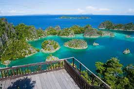

Raja Ampat dapat dicapai dengan pesawat dari Jakarta atau Bali ke Sorong via Makassar atau Ambon dan Manado. Penerbangan memakan waktu kurang lebih 6 jam.
raja ampat memiliki tempat penginapan yang bagus dan memiliki pemandangan keluar jendela yang sangat memanjakan mata dan membuat hati tenang